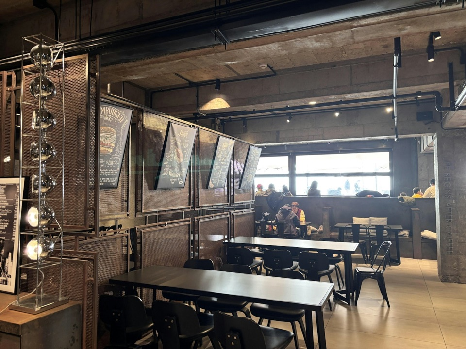

Среда
Соседская кофейня, куда возвращаются не только по средам.
Кофейный клуб · Москва
Находим места, куда хочется возвращаться. Пробуем кофе, знакомимся с бариста и делимся впечатлениями.
Не реклама. Наш вкус, ваши открытия.

Ноябрь 2026 · выбор редакции
Топ месяца по среднему баллу клуба за вкус, бариста, атмосферу и цену. При равенстве баллов сохраняем порядок каталога.
Соседская кофейня, куда возвращаются не только по средам.
Большое окно, маленький бар и кофе без суеты.
Место для паузы и вдумчивого знакомства с зерном.
Кофе без снобизма
Выберите район, бюджет и способ заваривания. Фильтры работают вместе.
Посмотрите фото, оценки по четырём критериям и впечатления клуба.
Оцените знакомую кофейню или предложите место для следующего обзора.